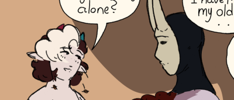
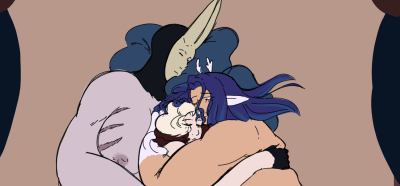
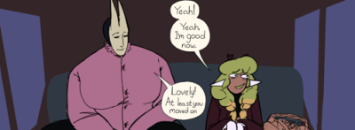

Sir John Peckham

Sir John Peckham is a mythical sort by design, the oldest in his circles of nobility not being sure of how he first entered the scene, having not changed out of his mask since they knew him as children. He once had the reputation as a "tried & true huntsman of the people" before a controversial exit from his career, now being treated as an "afterthought" in parties by people are who no longer respect, let alone fear him...
Personality
Beyond the skilful thrill seeker, beyond the playful, calculating monster of a man, beyond ALL OF IT... John is a man who values passion, curiosity and honor. A "gentleman adventurer" one might say, himself included. His values have warped over the ages as his investment as a hunter grew to end up seeing life as a whole as a game with side quests to complete. It's not all bad, though, as with this world view, he's held a strong sense of what's fair and isn't.
With the recent developments of his engagement with Val, and thus entering his world and circle, he almost immediately mellowed out. Now serving as Val's bodyguard for gigs, his gentlemanly nature is at the forefront. As any man of experience, he'll often catch himself thinking back to his "Golden Age" as a hunter. As he spends more time with Val, however, he realizes that the past is no contender to be called such.
Relations

Val in John's eyes at least, was his one in a million. He's met many an adventurer before... But not any like Valentine. With Val, his strength came through a form John had never seen before, literally to the performance of a sinister magic of his own design. He's creative, charming and deadly in his own way. *That* was what made the masked man catch feelings for him.
Along with his respect, Val has, of course, earned John's loving affection, often treating the smaller man to plenty niceties like new pairs of boots, trips out of the city and then some. It's not often you meet someone that makes you *feel.* Once you do, that's someone you have to keep. Luckily for John, Val wants to keep him too.

When Barrett became apart of Val's life as his second husband, there naturally some worry about potential conflict, in Barret's mind at least. Specifically, if him and John were to do well together. Unknown to him, however, John had already made up his mind on him... He likes him! Outside of his knowledge of Wyrms and their behaviors, it always struck him that despite not having any experience as a warrior, Barrett stayed with Val after the calamity, unlike most of his party.

Lalowe...she's just she;s shes a baby
Sandy will go here
Moth being the one party member who stuck with Val after everything is said and done, is already regarded pretty highly by Sir John. Seeing them in action, their dagger work at play, made him *like* them.
Tara they were coworkers........... in a past loife.
Art
Others Art
 from doon
from doon